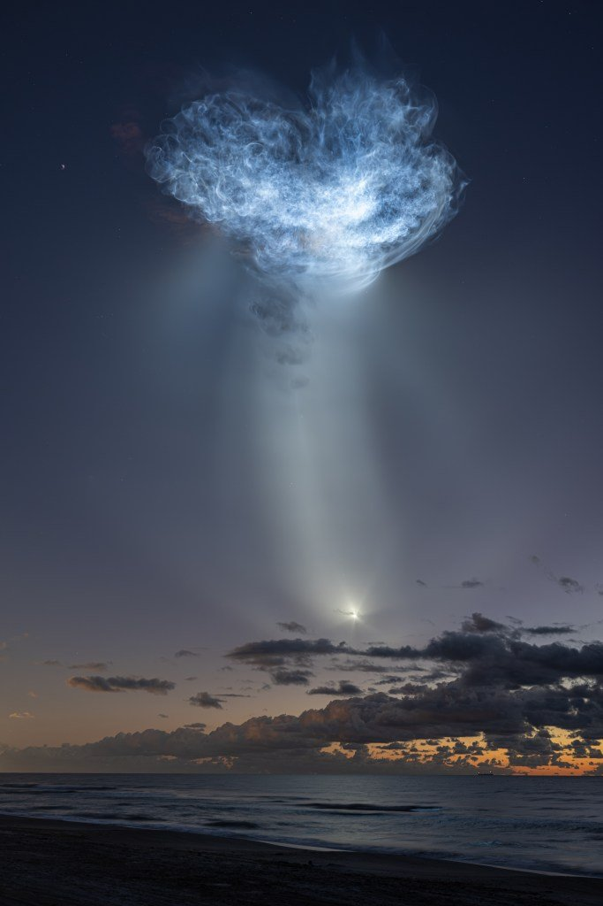

What's worth looking up for?
LOOK UP scans upcoming rocket launches and ranks the ones that may actually be worth watching from where you are—instead of simply showing the next rocket leaving Earth.
Your browser location stays on this page. LOOK UP does not save it.
Launch times will include your device’s time zone.
Best upcoming candidates
Where should I watch?
Start with a place you know, with a wide, unobstructed horizon. A nearby open view can be more useful than a long drive to a lookout.
Which direction?
Run a location check to see the bearing toward the selected launch site.
When to get ready
Confirm the latest launch schedule before heading out. Be ready around 10 minutes before the target time, and follow the live countdown for delays.
Choose your spot
Look for a clear horizon in the indicated direction, away from buildings, ridges, and bright lights. Check parking, access hours, and the weather before leaving.
What to look for
A distant launch may appear as a moving bright point, a thin trail, or an expanding plume. The rocket may only become visible after it climbs; the exact path is not yet modeled here.
Watching from the Phoenix area
A place to investigate for its panoramic views. The City lists vehicle entrance and parking hours as 5 a.m.–7 p.m.; trail hours differ. Check road closures and current access before planning an evening visit. This is not a verified launch viewing location.
Check official park hours and closures ↗A lookout’s elevation alone does not establish visibility. Check the horizon in the launch-site direction from your exact spot.
The bearing points toward the pad, not the rocket’s predicted position. A viewing plan is not a visibility guarantee.
The Falcon “jellyfish”

Photo: NASA/John Kraus. Original photo and context ↗
A little sunlight, high above a dark sky
Around dawn or dusk, sunlight can reach the rocket’s high-altitude exhaust while the ground below is dark. The spreading plume can glow like a jellyfish.
This is an example from a past Florida launch. It does not show what the selected mission will look like from your location.
Choose a location to see its expected sky conditions at launch time. Local darkness alone does not predict a sunlit plume.
Taking your first launch photo
Start with your phone’s normal camera and a wide view. Brace the phone or use a tripod, avoid digital zoom, and try a few exposures. Long night-mode exposures may blur a moving rocket.